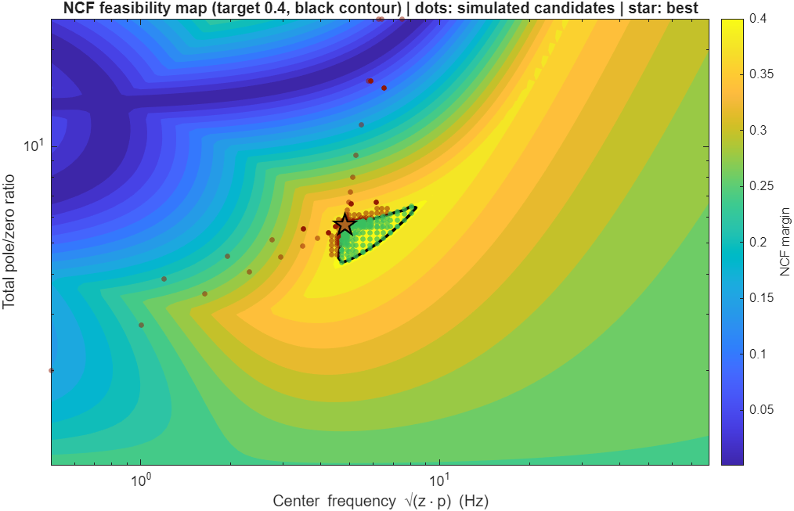
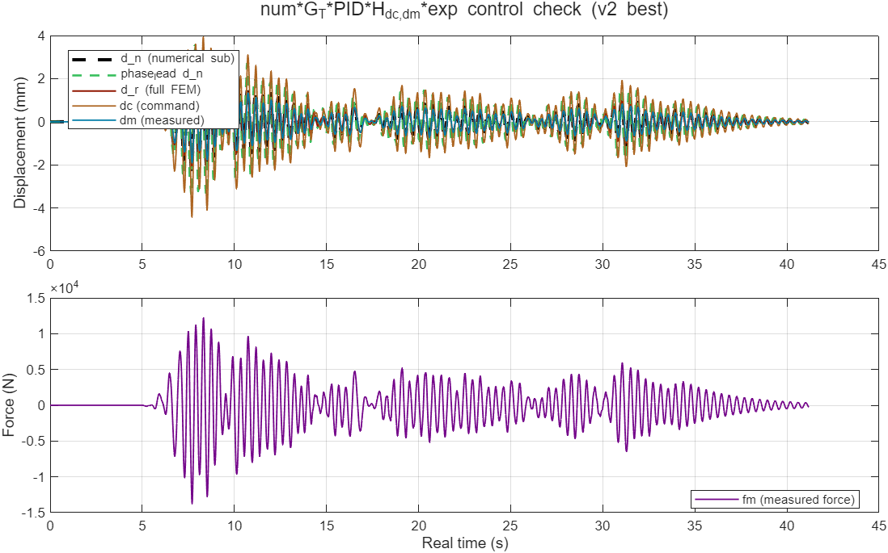

1. The problem
The phase lead GT(s) = kT(s+z)/(s+p), p > z, sits between the numerical substructure command dd and the actuator tracking loop. More lead compensates the actuator lag and improves the hybrid response (lower J4), but it also raises loop gain at high frequency and erodes the NCF robustness margin of the num·GT·PID·Hdc,dm·exp loop. The task:
minimize J4(zero_hz, pole_hz, gain)
subject to NCF_margin(zero_hz, pole_hz, gain) >= target (hard)
coupled closed loop stable (hard)The parameterization is (center c = √(z·p), ratio r = p/z) per section, searched in log space. The optimum almost always sits on the NCF constraint boundary: J4 keeps improving with lead until robustness gives out.
2. Why the legacy optimizer missed solutions
| Flaw | Consequence |
|---|---|
| NCF as a 108·shortfall² penalty. The constraint was folded into the objective with a huge weight. | The score surface is a canyon with near-vertical walls: SQP steps either see a flat J4 valley or a 105-high wall. fmincon stalls at the first wall contact instead of sliding along the boundary — exactly where the optimum lives. |
Rounded objective. The official J4 metric rounds to 0.01 %
(round(10000*std(...)/std(...))/100). |
The objective is a staircase: finite differences return exactly zero gradient between 0.01 % steps, so SQP frequently declared convergence at its start point. |
| Coarse fixed grid, full simulation everywhere. 14×13 = 182 candidates, each requiring a full per-sample time simulation (~0.5–1 s each), whether or not it could possibly meet the NCF target. | Most of the budget was burned on infeasible or hopeless points; grid spacing (~1.5× in frequency) is far coarser than the width of the good-J4 valley. |
| No feasibility knowledge. Nothing told the user whether the target was reachable at all. | The shipped result pl_7000_ncf4.mat was saved from a
grid checkpoint with NCF = 0.402 against a 0.45 requirement —
an infeasible answer, with no warning that 0.45 is impossible for one
section (the true maximum is 0.4167). |
3. The three ideas behind v2
3.1 Simulate the closed loop as one LTI system (~10× per candidate)
The legacy evaluator ran a MATLAB for loop over all
84k samples, updating three filter structs per step. But the whole
candidate loop — numerical substructure → lead → actuator
→ force feedback — is linear and time-invariant. v2 assembles the
exact closed-loop state-space (solving the same algebraic feedthrough
loop the old code solved per-sample) once per candidate:
x = [x_num; x_lead; x_act]
x(k+1) = A_cl x(k) + B_cl ag(k)
[dd; dd_lead; dm; force; floors](k) = C x(k) + D ag(k)and propagates it with ltitr (the compiled kernel inside
lsim). Same recursion, same numbers (Section 5), about
10× faster — and the closed-loop poles needed for the stability
check are eig(A_cl) of the same matrix.
3.2 Analytic NCF margin (microseconds per candidate)
The NCF margin only needs the candidate lead's frequency response
multiplied by the precomputed base open-loop response. Because
the lead is discretized with Tustin, its discrete response is available
in closed form — no tf, c2d or
freqresp objects:
G_T(e^{jwT}) = gain * (s_eq + z_rad)/(s_eq + p_rad),
s_eq = j*(2/T)*tan(wT/2) % exact Tustin identity
NCF = min over w of |1 + L| / sqrt(2(1 + |L|^2)), L = L_base .* G_TThis makes the NCF constraint essentially free: v2 maps
96×72 = 6,912 candidates in ~1.8 s, before a single
simulation, and knows exactly where the feasible region and its boundary
are. It matches the legacy freqresp computation to
8×10-15.
3.3 Treat the target as a constraint and hunt the boundary
Feasible candidates are ranked purely by J4 (+ optional penalties); infeasible ones can never beat a feasible one. The NCF boundary — where the optimum lives — is sampled explicitly (bisected to the feasible side), and the final fmincon polish gets the target as a cheap nonlinear constraint, so SQP can slide along the boundary instead of bouncing off a penalty wall. The polish also minimizes the unrounded J4, fixing the staircase-gradient problem.
4. The four stages
Everything is deterministic; a best-so-far checkpoint file is updated throughout, and every improvement is printed with its parameters so a run can be aborted at any time without losing the answer.
5. Verification: the fast evaluator is the old evaluator
The v2 evaluator was compared against the legacy per-sample loop (copied verbatim into the test) on the full 84,338-step record:
| Candidate (c, r) | J4 legacy | J4 v2 | |ΔNCF| | t legacy | t v2 |
|---|---|---|---|---|---|
| baseline (no lead) | 88.34 % | 88.34 % | 0 | 1.00 s | 0.095 s |
| c=2, r=2 | 58.63 % | 58.63 % | 8.3e-15 | 0.83 s | 0.114 s |
| c=4, r=3 | 44.87 % | 44.87 % | 7.4e-15 | 0.60 s | 0.054 s |
| c=8, r=5 | 47.23 % | 47.23 % | 3.3e-15 | 0.53 s | 0.052 s |
| c=32, r=12 | 65.75 % | 65.75 % | 1.7e-16 | 0.50 s | 0.083 s |
| c=60, r=20 | 71.37 % | 71.37 % | 1.7e-16 | 0.47 s | 0.049 s |
Max deviations across all candidates: ΔJ4 = 0 (identical after the metric's 0.01 % rounding; raw values agree to ~10-7 % from floating-point reordering), ΔNCF ≤ 8.6×10-15, Δmax|pole| = 0. Median speedup ~10× per candidate — and the analytic NCF prescreen removes the need to simulate at all for the thousands of map candidates (≈10³–10⁴× cheaper than a legacy grid point for feasibility questions).
6. End-to-end comparison (same inputs, target NCF 0.40)
Both engines were run on the same machine, serial, with identical inputs, at target NCF 0.40 (the legacy engine with the exact settings of its old wrapper). Identical baseline for both: J4 = 88.34 %, NCF = 0.2558.
| Legacy optimizer (measured rerun) | v2 optimizer | |
|---|---|---|
| Best J4 (full record) | 35.12 % | 28.76 % |
| NCF margin at best | 0.4112 (0.011 of usable margin left on the table) | 0.4000 (constraint exactly active) |
| Best filter | z = 2.401 Hz, p = 12.49 Hz, k = 5.205 | z = 2.021 Hz, p = 11.50 Hz, k = 5.689 |
| Closed-loop simulations | 796 (182 grid + 614 fmincon) | 551 |
| Wall time | 359 s | 38 s (9.4× faster) |
| Feasibility knowledge | none | full NCF map + boundary in 1.8 s |
v2 lands 6.4 J4-points lower (18 % better response accuracy) in a tenth of the time, by riding the NCF boundary to its J4-optimal point. The legacy engine stalls at NCF 0.4112 because its penalty formulation cannot approach the boundary: its own log shows the failure modes directly —
- fmincon start 1 (seeded at the best grid node) declared convergence after 3 evaluations: the rounded J4 staircase returned zero gradient (flaw #2);
- starts 4, 7 and 10 terminated at fval ≈ 35,208 — five orders of magnitude above the true objective — wedged on the 108·shortfall² penalty wall (flaw #1).
The gap grows with search difficulty: the v2 advantage comes from sampling the constraint boundary itself, which no amount of legacy grid refinement reaches efficiently. (Even a 50-simulation, 5-second v2 run already reaches J4 = 28.81 %.)
6.1 The unreachable-target case (target 0.45)
The file the legacy optimizer shipped for this setup
(pl_7000_ncf4.mat) was asked for NCF ≥ 0.45 and silently
returned NCF = 0.402 (J4 = 38.95 %) — saved from a grid checkpoint,
constraint failed, score dominated by the 108 penalty
(229,255). Running v2 at the same target:
- Stage 1 proves in 1.8 s that 0.45 is unreachable for one section in the search box (maximum achievable NCF = 0.4167) and says so in the terminal.
- The search then minimizes the shortfall and returns J4 = 32.55 % at NCF = 0.4175 — better on both axes than the legacy answer, with an explicit note recommending a lower target, wider bounds or more sections.
6.2 The map that explains it
Color = NCF margin over the (center, ratio) box, black contour = target, green dots = feasible simulated candidates, star = optimum. The legacy 14×13 grid put at most a handful of points anywhere near the black contour; v2 samples the contour itself.


7. Code layout
| File | Role |
|---|---|
d_HS\optimize_vHS_phase_lead_min_ncf.m |
Rebuilt wrapper — same override interface as before, now calls the v2 engine. |
d_HS\utils_HS\optimize_vHS_phase_lead_v2.m |
The new engine (single function file: problem prep, fast
evaluator, four stages, reporting, saving, plots).
optimize_vHS_phase_lead_v2('helpers') exposes internals
for tests. |
d_HS\utils_HS\optimize_vHS_phase_lead.m |
Legacy engine, untouched (still used by
optimize_vHS_phase_lead_2z2p_ncf04_fem3.m and kept for
reference). |
Usage details: user guide.